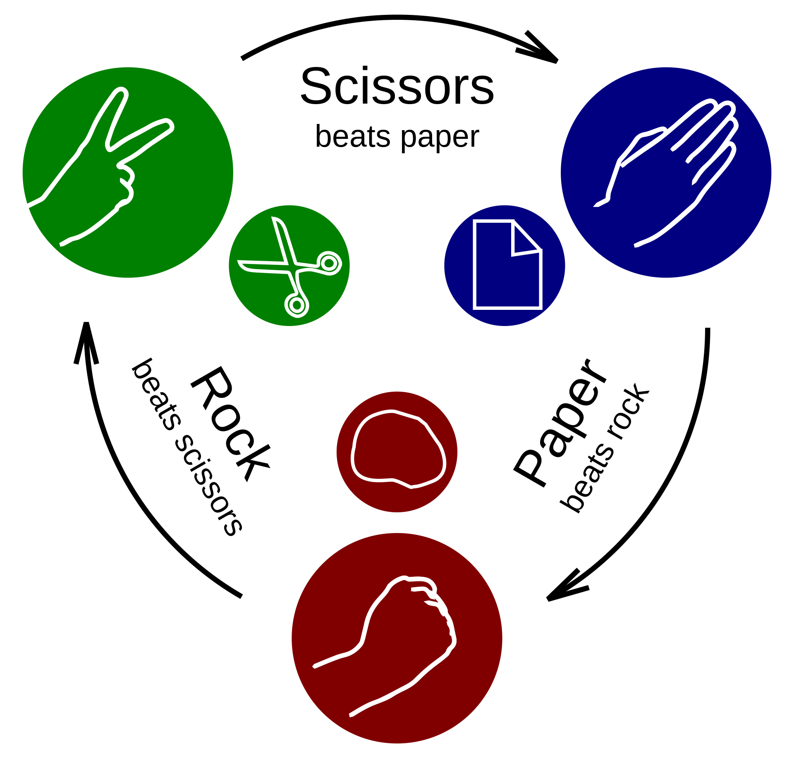

RPS.bot: Intro
How it Works

{kind=link}
- Rock defeats scissors, scissors defeats paper, and paper defeats rock
- You get +1 point for a win, -1 for a loss, and 0 for ties
Why?
We think RPS is fun and while simple enough that everyone knows it and understands the rules, it’s still a great domain for thinking about strategy in a repeated game against a variety of opponents.
From DeepMind in 2023:
In sequential decision-making, agent evaluation has largely been restricted to few interactions against experts, with the aim to reach some desired level of performance (e.g. beating a human professional player). We propose a benchmark for multiagent learning based on repeated play of the simple game Rock, Paper, Scissors.
Game Theory Equilibrium
Payoff matrix
The core features of a game are its players, the actions of each player, and the payoffs. We can show this for RPS in the below payoff matrix, also known as normal-form.
| Player 1/2 | Rock | Paper | Scissors |
|---|---|---|---|
| Rock | (0, 0) | (-1, 1) | (1, -1) |
| Paper | (1, -1) | (0, 0) | (-1, 1) |
| Scissors | (-1, 1) | (1, -1) | (0, 0) |
The payoffs for Player 1 are on the left and for Player 2 on the right in each payoff outcome of the game. For example, the bottom left payoff is when Player 1 plays Scissors and Player 2 plays Rock, resulting in -1 for P1 and +1 for P2.
A strategy says which actions you would take for every state of the game.
Expected value
Expected value in a game represents the average outcome of a strategy if it were repeated many times. It’s calculated by multiplying each possible outcome by its probability of occurrence and then summing these products.
Suppose that Player 1 plays the strategy:
\begin{cases} r_1 = 0.5 \\ p_1 = 0.25 \\ s_1 = 0.25 \end{cases}
and Player 2 plays the strategy:
\begin{cases} r_2 = 0.1 \\ p_2 = 0.3 \\ s_2 = 0.6 \end{cases}
Let’s add these to the matrix:
| Player 1/2 | Rock (r_2=0.1) | Paper (p_2=0.3) | Scissors (s_2=0.6) |
|---|---|---|---|
| Rock (r_1=0.5) | (0, 0) | (-1, 1) | (1, -1) |
| Paper (p_1=0.25) | (1, -1) | (0, 0) | (-1, 1) |
| Scissors (s_1=0.25) | (-1, 1) | (1, -1) | (0, 0) |
To simplify, let’s just write the payoffs for Player 1 since payoffs for Player 2 will simply be the opposite:
| Player 1/2 | Rock (r_2=0.1) | Paper (p_2=0.3) | Scissors (s_2=0.6) |
|---|---|---|---|
| Rock (r_1=0.5) | 0 | -1 | 1 |
| Paper (p_1=0.25) | 1 | 0 | -1 |
| Scissors (s_1=0.25) | -1 | 1 | 0 |
Now we can multiply the player action strategies together to get a percentage occurrence for each payoff in the matrix:
| Player 1/2 | Rock (r_2=0.1) | Paper (p_2=0.3) | Scissors (s_2=0.6) |
|---|---|---|---|
| Rock (r_1=0.5) | Val: 0 Pr: 0.5(0.1) = .05 |
Val: -1 Pr: 0.5(0.3) = .15 |
Val: 1 Pr: 0.5(0.6) = .3 |
| Paper (p_1=0.25) | Val: 1 Pr: 0.25(0.1) = .025 |
Val: 0 Pr: 0.25(0.3) = .075 |
Val: -1 Pr: 0.25(0.6) = .15 |
| Scissors (s_1=0.25) | Val: -1 Pr: 0.25(0.1) = .025 |
Val: 1 Pr: 0.25(0.3) = .075 |
Val: 0 Pr: 0.25(0.6) = .15 |
Note that the total probabilities sum to 1 and each row and column sums to the probability of playing that row or column.
We can work out the expected value of the game to Player 1 (summing all payoffs multiplied by probabilities from top left to bottom right):
\mathbb{E}[P_1] = 0(0.05) + -1(0.15) + 1(0.3) + 1(0.025) + 0(0.075) + -1(0.15) + -1(0.025) + 1(0.075) + 0(0.15) = 0.075
Therefore P1 is expected to gain 0.075 per game given these strategies. Since payoffs are reversed for P2, P2’s expectation is -0.075 per game.
Zero-sum
We see in the matrix that every payoff is zero-sum, i.e. the sum of the payoffs to both players is 0. This means the game is one of pure competition. Any amount P1 wins is from P2 and vice versa.
Nash equilibrium
A Nash equilibrium means that no player can improve their expected payoff by unilaterally changing their strategy. That is, changing one’s strategy can only result in the same or worse payoff (assuming the other player does not change).
In RPS, the Nash equilibrium strategy is to play each action r = p = s = 1/3 of the time. I.e., to play totally randomly.
Playing a combination of strategies is called a mixed strategy, as opposed to a pure strategy, which would select only one action. Mixed strategies are useful in games of imperfect information because it’s valuable to not be predictable and to conceal your private information. In perfect information games, the theoretically optimal play would not contain any mixing (i.e., if you could calculate all possible moves to the end of the game).
The equilibrium RPS strategy is worked out below:
Playing this strategy means that whatever your opponent does, you will breakeven! For example, think about an opponent that always plays Rock.
\begin{equation} \begin{split} \mathbb{E}(\text{Equilibrium vs. Rock}) &= 0(r) + 1(p) + -1(s) \\ &= 0(1/3) + 1(1/3) + -1(1/3) \\ &= 0 \end{split} \end{equation}
How about the case of the opponent playing 60% Rock, 20% Paper, 20% Scissors?
\begin{equation} \begin{split} \mathbb{E}(\text{Equilibrium vs. 622}) &= 0.6(\text{Equilibrium vs. Rock}) \\ &\quad{}+ 0.2(\text{Equilibrium vs. Paper}) \\ &\quad{}+ 0.2(\text{Equilibrium vs. Scissors}) \\ &= 0.6(0) + 0.2(0) + 0.2(0) \\ &= 0 \end{split} \end{equation}
The random equilibrium strategy will result in 0 against any pure strategy and any combination of strategies including 622 and the opponent playing the random strategy.
Exploiting vs. Nash
The equilibrium strategy vs. a pure Rock opponent is a useful illustration of the limitations of playing at equilibrium. The Rock opponent is playing the worst possible strategy, yet equilibrium is still breaking even!
What’s the best that we could do against Rock only? We could play purely paper. This is called a best response strategy. The payoffs are written for playing Paper and the probabilities indicate the opponent playing only Rock.
\begin{equation} \begin{split} \mathbb{E}(\text{Paper vs. Rock}) &= 1(r) + 0(p) + -1(s) \\ &= 1(1) + 0(0) + -1(0) \\ &= 1 \end{split} \end{equation}
We’d win 1 each game playing Paper vs. Rock.
How about against the opponent playing 60% Rock, 20% Paper, 20% Scissors? Here we can see that because they are overplaying Rock, our best strategy is again to always play Paper. We write the payoffs for playing Paper and the probabilities according to the 622 strategy.
\begin{equation} \begin{split} \mathbb{E}(\text{Paper vs. 622}) &= 1(r) + 0(p) + -1(s) \\ &= 1(0.6) + 0(0.2) + -1(0.2) \\ &= 0.6 + 0 - 0.2 \\ &= 0.4 \end{split} \end{equation}
Playing Paper vs. 622 results in an expected win of 0.4 per game.